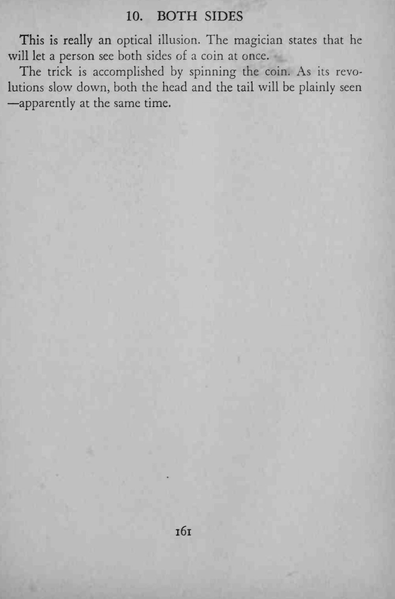
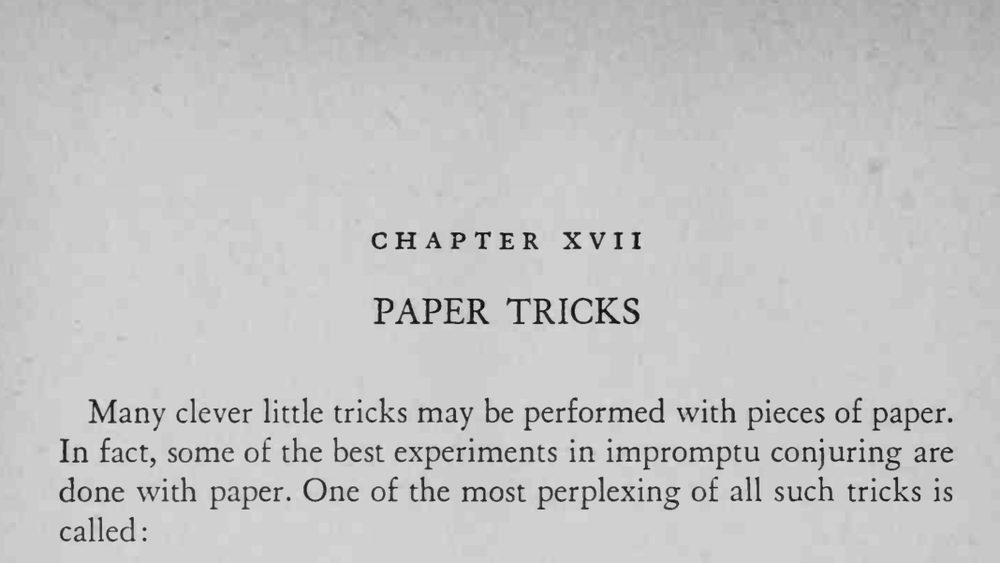

魔术师让一枚硬币旋转起来，转速慢下来时，正反两面似乎同时可见。
旋转要平稳，转速慢到刚能看清两面时效果最好。


This is really an optical illusion. The magician states that he will let a person see both sides of a coin at once. The trick is accomplished by spinning the coin. As its revolutions slow down, both the head and the tail will be plainly seen apparently at the same time. Many clever little tricks may be performed with pieces of paper. In fact, some of the best experiments in impromptu conjuring are done with paper. One of the most perplexing of all such tricks is called: